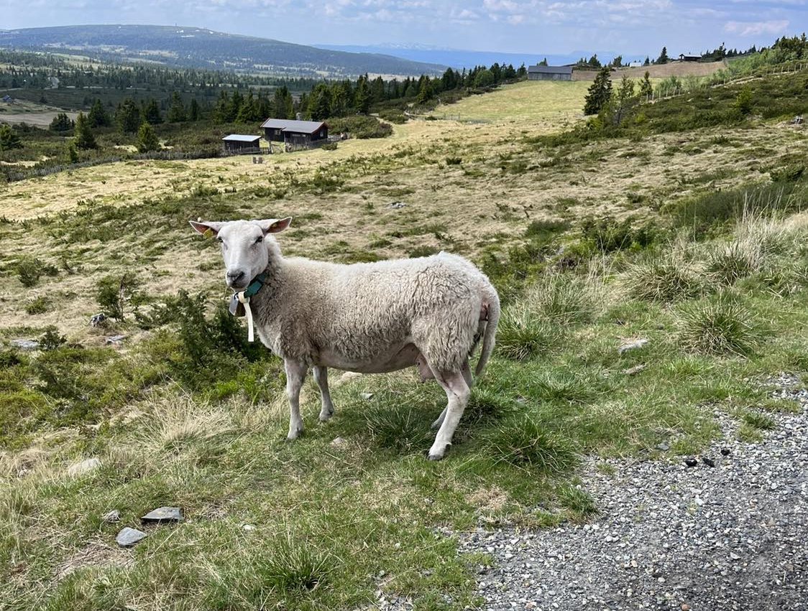

H1 TITTEL
Chinese hackers have unleashed a never-before-seen Linux backdoor
SprySOCKS borrows from open source Windows malware and adds new tricks.

@Einar Melsom, 2023
Researchers have discovered a never-before-seen backdoor for Linux that's being used by a threat actor linked to the Chinese government.
Trochilus
The new backdoor originates from a Windows backdoor named Trochilus, which was first seen in 2015 by researchers from Arbor Networks, now known as Netscout. They said that Trochilus executed and ran only in memory, and the final payload never appeared on disks in most cases. That made the malware difficult to detect. Researchers from NHS Digital in the UK have said Trochilus was developed by APT10, an advanced persistent threat group linked to the Chinese government that also goes by the names Stone Panda and MenuPass.